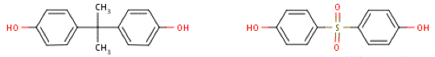
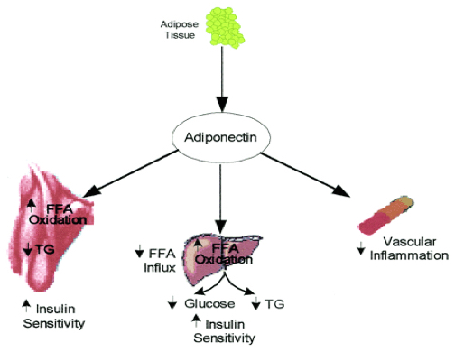
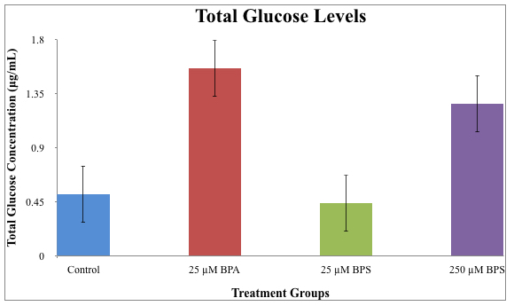
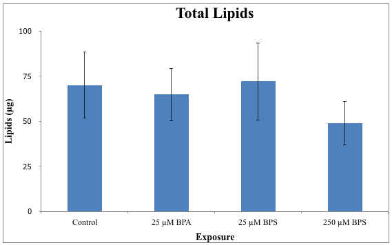
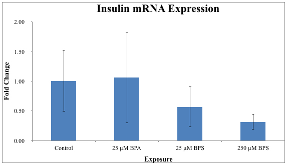
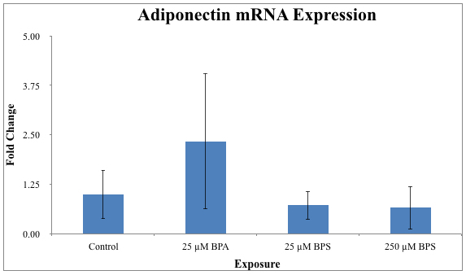

Developmental Exposure to Bisphenol A and Bisphenol S Induce Metabolic Hormonal Disruption
Writer: Marcin Ciesla
Citation: Ciesla, M. & White, L.A. (2016). Developmental Exposure to Bisphenol A and Bisphenol S Induce Metabolic Hormonal Disruption. Rutgers Research Review, 1(1).
My name is Marcin Ciesla and I am a Molecular Biology and Biochemistry major with a minor in Chemistry in the School of Arts and Sciences. I plan to pursue an M.D./Ph.D. after graduation. My project focuses on the developmental effects of BPA and BPS exposure in zebrafish. My advisor is Dr. Lori A. White and her research interests include studying the pathological changes caused by xenoestrogens.
Toxicology is a field that examines the pathological changes of chemicals in organisms at a macroscopic and molecular level. Two chemicals that are of particular interest are Bisphenol A (BPA) and Bisphenol S (BPS). BPA is an endocrine disrupting compound that is used in the production of polycarbonated plastics and epoxy resins. BPA disrupts the endocrine system by binding to estrogen receptors in cells and mimicking the effects of estrogen (Vogel, 2009). The EPA considers 50 mg per kg per day to be a safe limit for BPA exposure over the life-time of a human. However, previous studies have shown exposure to BPA below the safe limit can cause adverse effects such as diabetes and obesity (Saal et al., 2007). Based on these findings, the Canadian government declared BPA to be toxic, but the FDA has determined that the current levels of exposure are safe for humans (Vogel, 2009). Regardless, manufacturers have begun to use alternative compounds to reduce the use of BPA; one such alternative is BPS (Fig. 1).

Figure 1. Chemical structures of BPA (left) and BPS (right).
With BPA being found in 93% of human urine samples, further research is needed to determine the effects of BPA exposure and to determine if BPS is a safer alternative (Calafat et al., 2008). Previous research indicated that BPS may be as potent as BPA with regards to binding to the estrogen receptor. However, little research has been completed comparing the effects of both compounds on metabolism, especially while using whole organisms as models (Rochester & Bolden, 2015). The goal of this project was to examine the effects of BPA and BPS exposure on metabolic functionality in zebrafish to determine if BPS is a safer alternative than BPA. Zebrafish were chosen as the model organism because they are an oviparous species that produce many embryos so a high statistical power can be achieved. To assess the metabolic state of the zebrafish following a developmental exposure to BPA or BPS in larvae, four endpoints were used: total free body glucose, total lipid, insulin mRNA expression, and adiponectin mRNA expression. Insulin and adiponectin are both hormones that function in the regulation of glucose and lipid production. Insulin allows glucoses to enter cells and stimulates the synthesis of lipids while adiponectin is involved in the sensitivity of insulin (Fig. 2). Our group predicts that developmental exposure of a higher concentration of BPS than BPA will induce hyperglycemia and hyperlipidemia.

Figure 2: The interaction of adiponectin and insulin. Adiponectin is released by adipose tissue and improves insulin sensitivity by increasing fatty acid oxidation in the liver and muscle and reducing the rate of gluconeogenesis in the liver (Chandran, Philips, & Ciaraldi, 2003).
Zebrafish (strain AB) embryos were collected and exposed to 25 µM BPA, 25 µM BPS, or 250 µM BPS in water from 3 hours post fertilization (hpf) to 96 hpf; 0.2% DMSO was used as a vehicle for BPA and BPS. These concentrations were chosen as they were below the established LC50 of 50 µM for BPA and 524 µM for BPS. Insulin and adiponectin mRNA expression were both measured at 96 hpf by collecting 4 population replicates of 15 fish per exposure group. This was repeated three times and the data were combined to have a sample size of 12. At 96 hpf, the remaining larvae were transferred to treatment-free water and reared until 2 weeks post fertilization. At this point, the fish were starved for 24 hours before they were collected for the lipid and glucose assay. Lipids were measured in a modified assay protocol previously described by Van Handel (1985) and glucose was measured in a modified Amplex red glucose assay (Life Technologies). mRNA expression was measured using RT-qPCR. T tests were performed between controls and experimental treatments with p < 0.05 used as a limit for statistical significance.
Exposure to 25 µM BPA and 250 µM BPS resulted in an increase in glucose levels by 200% and 150% fold respectively (Fig. 3). However, only exposure to 250 µM BPS decreased lipid accumulation by 30% (Fig. 4). In addition, insulin mRNA expression was decreased only in the 25 µM BPS and 250 µM BPS (Fig. 5). Finally, adiponectin mRNA expression was increased only in 25 µM BPA (Fig 6). We speculate the increase in glucose levels and decrease in lipid levels in fish exposed to BPS may result from a decrease in the subsequent insulin expression. When insulin is lowered, less glucose is able to be taken up by cells and there is a reduced stimulation of lipid synthesis. A previous study done on mice lacking the insulin receptor has shown that the mice develop hyperglycemia and have decreased fat accumulation (Kadowaki, 2000). Therefore, it is plausible that that the effects seen could be the result of low insulin expression.
Developmental exposure to BPA did not alter insulin expression but increased adiponectin expression (Fig. 4). We predict that the increase in adiponectin expression serves as a protective function against hyperglycemia. A previous study done on examining the potential therapeutic effect of adiponectin found that when adiponectin is administered to mice that are on a high fat diet, the mice exhibit a decrease in plasma glucose concentration (Fruebis et al., 2001). However, our results show that the zebrafish still developed hyperglycemia. Therefore it is unclear how the zebrafish developed hyperglycemia, but it may involve another pathway other than insulin.
It is unknown if the zebrafish are able to recover from the effects of developmental exposure. A previous study done on Medaka fish found that developmental exposure to BPA caused decreased fecundity and embryo viability in the F2 and F3 generations (Bhandari, Saal, & Tillitt, 2015). Therefore, in the future we hope to examine the generational effects of developmental BPA and BPS exposure. Additionally, we hope to provide insight into how these compounds cause endocrine disruption. We hope this data will contribute to the analysis of the safety of BPS as an alternative to BPA.

Figure 3: Total glucose levels at 2 weeks post fertilization. Total glucose content was measured in each pooled replicate (15 fish per replicate). Bar graphs represent the mean and standard deviation. T Test P < 0.05. (N=6-8)

Figure 4: Total lipids at 2 weeks post fertilization. Total lipids was measured in each pooled replicate (15 fish per replicate). Bar graphs represent the mean and standard deviation. T-Test P < 0.05. (N=6-8)

Figure 5: Insulin mRNA expression measured at 96hpf. Insulin mRNA expression was measured in each pooled replicate (15 fish per replicate). Bar graphs represent the mean and standard deviation. T-Test P < 0.05. (N=10-12)

Figure 6: Adiponectin mRNA expression measured at 96hpf. Adiponectin mRNA expression was measured in each pooled replicate (15 fish per replicate). Bar graphs represent the mean and standard deviation. T-Test P < 0.05. (N=10-12)
References
- Bhandari, R., Saal, F., & Tillitt, D. (2015). Transgenerational effects from early developmental exposures to bisphenol A or 17α-ethinylestradiol in medaka, Oryzias latipes. Sci. Rep., 9303-9303.
- Calafat, A. M., Ye, X., Wong, L.-Y., Reidy, J. A., & Needham, L. L. (2008). Exposure of the U.S. Population to Bisphenol A and 4-tertiary-Octylphenol: 2003–2004. Environ. Health Perspect., 116(1), 39-44. DOI: 10.1289/ehp.10753
- Chandran, M., Phillips, S. A., Ciaraldi, T., & Henry, R. R. (2003). Adiponectin: More Than Just Another Fat Cell Hormone? Diabetes Care, 26(8), 2442-2450.
- Fruebis, J., Tsao, T., Javorschi, S., Ebbets-Reed, D., Erickson, M. R., Yen, F. T., . . . Lodish, H. F. (2001). Proteolytic cleavage product of 30-kDa adipocyte complement-related protein increases fatty acid oxidation in muscle and causes weight loss in mice. Proc. Natl. Acad. Sci. USA, 98(4), 2005-2010.
- Kadowaki, T. (2000). Insights into insulin resistance and type 2 diabetes from knockout mouse models. J. Clin. Invest., 106(4), 459-465.
- Rochester, J., & Bolden, A. (2015). Bisphenol S and F: A Systematic Review and Comparison of the Hormonal Activity of Bisphenol A Substitutes. Environ. Health Perspect., 123(7), 643.
- Van Handle, E. (1985). Rapid determination of total lipids in Mosquitoes. J. Am. Mosq. Control Assoc., 1(3), 302-304.
- Vogel, S. (2009). The Politics of Plastics: The Making and Unmaking of Bisphenol A “Safety”. Am. J. Public Health, 99, 559-566. DOI: 10.2105/AJPH.2008.159228
- Vom Saal, F. S., Akingbemi, B. T., Belcher, S. M., Birnbaum, L. S., Crain, D. A., Eriksen, M., Zoeller, R. T. (2007). Chapel Hill bisphenol A expert panel consensus statement: Integration of mechanisms, effects in animals and potential to impact human health at current levels of exposure. Reproductive Toxicology (Elmsford, N.Y.), 24(2), 131-138. DOI: 10.1016/j.reprotox.2007.07.005